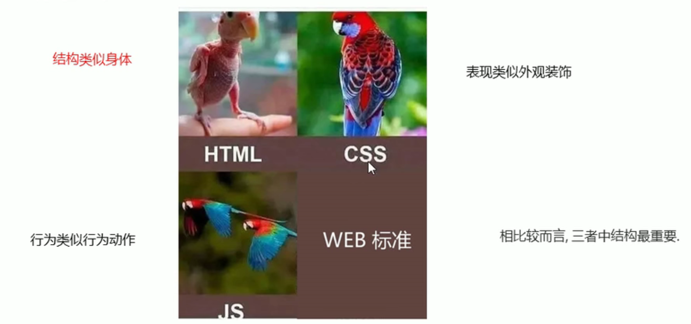

1 认识Web
本篇文章主要由五个章节构成，从WEB标准到初识HTML，接着学习HTML常用标签，最后学习表格列表和表单。💪💪开始充电之旅啦~~~
1.1 网页
网页是由文字、图像、音频、视频等元素构成。我们通常看到的网页是以.htm或.html后缀结尾的文件，因此将其俗称为HTML文件，它需要通过浏览器来阅读。
网站是网页的集合。
HTML是超文标记语言（Hyper Text Makeup Language），它是一种用来描述网页的一种语言。 HTML不是编程语言，而是一种标记语言（Makeup language），标记语言是一套标签标记（Makeup tag）。 所谓超文本，有两层含义：
- 它可以加入图片、声音、动画、多媒体等内容（超越了文本显著）
- 它可以从一个文件跳转到另一个文件，与世界各地主机文件连接（炒鸡连接文本）
网页的形成 网页是由网页元素组成的，这些元素是利用html标签描述出来，然后通过浏览器解析出来显示给用户。 前端人员开发代码→浏览器显示代码（解析、渲染）→生成Web页面
1.2 浏览器
浏览器是显示、运行网页的平台。IE、火狐（Firefox）、谷歌（Chrome）、Safari和欧鹏（Opera）被称为五大浏览器。
浏览器内核排版引擎、解释引擎、渲染引擎。负责读取网页内容，整理讯息，计算网页的显示方式并显示页面。
| 浏览器 | 内核 | 备注 |
|---|---|---|
| IE | Trident | IE、猎豹安全、360极速浏览器、百度浏览器 |
| Firefox | Gecko | 可惜这几年已经没落了，打开速度慢、升级频繁、猪一样的队友flash、神一样的对手chrome。 |
| Safari | Webkit | 现在很多人错误地把 webkit 叫做 chrome内核（即使 chrome内核已经是 blink 了）。苹果感觉像被别人抢了媳妇，都哭晕在厕所里面了。 |
| Chrome | Chromium/Blink | 在 Chromium 项目中研发 Blink 渲染引擎（即浏览器核心），内置于 Chrome 浏览器之中。Blink 其实是 WebKit 的分支。大部分国产浏览器最新版都采用Blink内核。二次开发 |
| Opera | Blink | 现在跟随chrome用blink内核。 |
1.3 Web标准
Web标准是由W3C组织和其他标准化组织制定的一系列标准的集合。W3C（万维网联盟）是国际最著名的标准化组织。
1.3.1 为什么需要Web标准
浏览器不同，它们显示页面或者排版就有些许差异。 遵循Web标准除了可以让不同开发人员写出的页面更标准，更统一外，还有以下优点：👇
- 易于维护：只需更改CSS文件，就可以改变整站的样式
- 页面响应快：HTML文档体积变小，响应时间短
- 可访问性：语义化的HTML（结构和表现相分离的HTML）编写的网页文件，更容易被屏幕阅读器识别
- 设备兼容性：不同的样式表可以让网页在不同的设备上呈现不同的样式
- 搜索引擎：语义化的HTML能更容易被搜索引擎解析，提升排名
1.3.2 Web标准构成
主要包括结构标准（Structure），表现标准（Presentation）和行为标准（Behavior）。
- 结构标准用于对网页元素进行整理和分类，现阶段主要学的是HTML
- 表现标准用于设置网页元素的版式、颜色、大小等外观属性，主要指的是CSS
- 行为标准用于对网页模型的定义及交互的编写，现阶段主要学的是JavaScript
| 标准 | 说明 |
|---|---|
| 结构标准 | 用于对网页元素进行整理和分类，现阶段主要学的是HTML |
| 表现标准 | 用于设置网页元素的版式、颜色、大小等外观属性，主要指的是CSS |
| 行为标准 | 用于对网页模型的定义及交互的编写，现阶段主要学的是JavaScript |
Web标准提出的最佳体验方案：结构、样式、行为相分离。简单理解：结构写到HTML文件中、表现写到CSS文件中、行为写到JavaScript中。

图1.1: Web标准